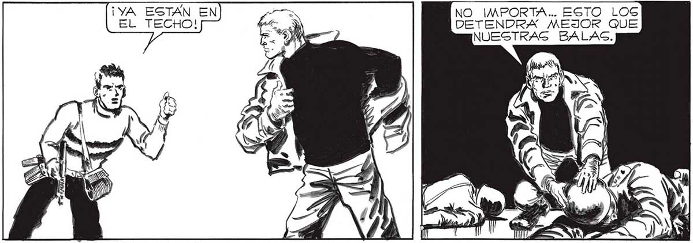

] NOS FLANQUEAN, SENOR... PRONTO ESTARAN _ SOBRE EL TECHO... Y ALLI,EN LA CALLE HAN TRAIDO ALGO... EN CINCO MINUTOS NOS COCINAN. A, ' 6 A sE > + Mi 2 | AO O rara ví 2 Cata E. ¿A PL <A RS Y Me AAC AE DD = - 9er ) a e k 4 A A == -; W A BOTS, PERO NO HABIA ALTERNATIVA. TENIAMOG QUE RETKAGAR EL ATAQUE . ¡YA ESTAN EN EL TECHO! dad . > ÉL ALIVIO DE QUITARME POR FIN EL CAS: CO Y EL TRAJE AIGLANTE,FUE ENTURBIADO POR LA MUERTE QUE ME RODEABA. NADA PEOR QUE LA MUERTE JOVEN... ERA DURO TIRAR CONTRA LOG HOMBRES-RO-"" ¡Sl ANDAMOG LIGERO, NO NOG COCINARAN! APÚRATE, FRANCO, CAMBIA | TU UNIFORME POR LA ROPA DE ALGUNO DE ESOS MUCHACHOS... Y PONLE A ÉL>EL UNIFORME ... VAYA USTED AHORA ,GENOR... NO IMPORTA... ESTO LOG DETENDRA MEJOR QUE NUESTRAS BALAS. ESTAS. 147
